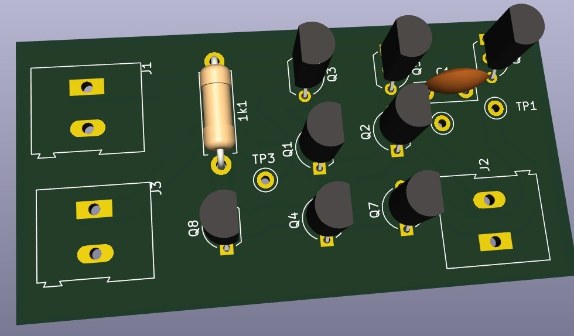
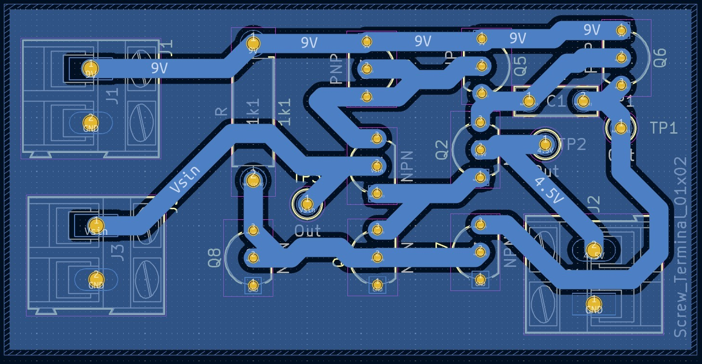
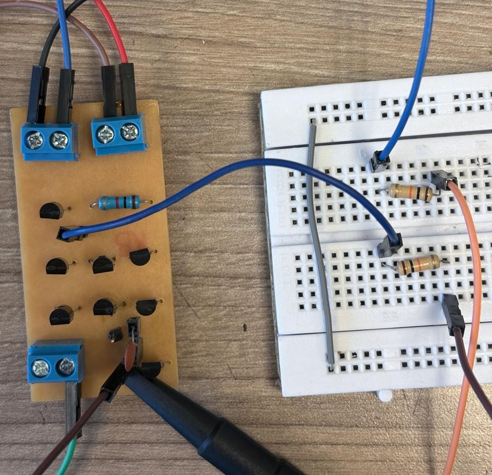
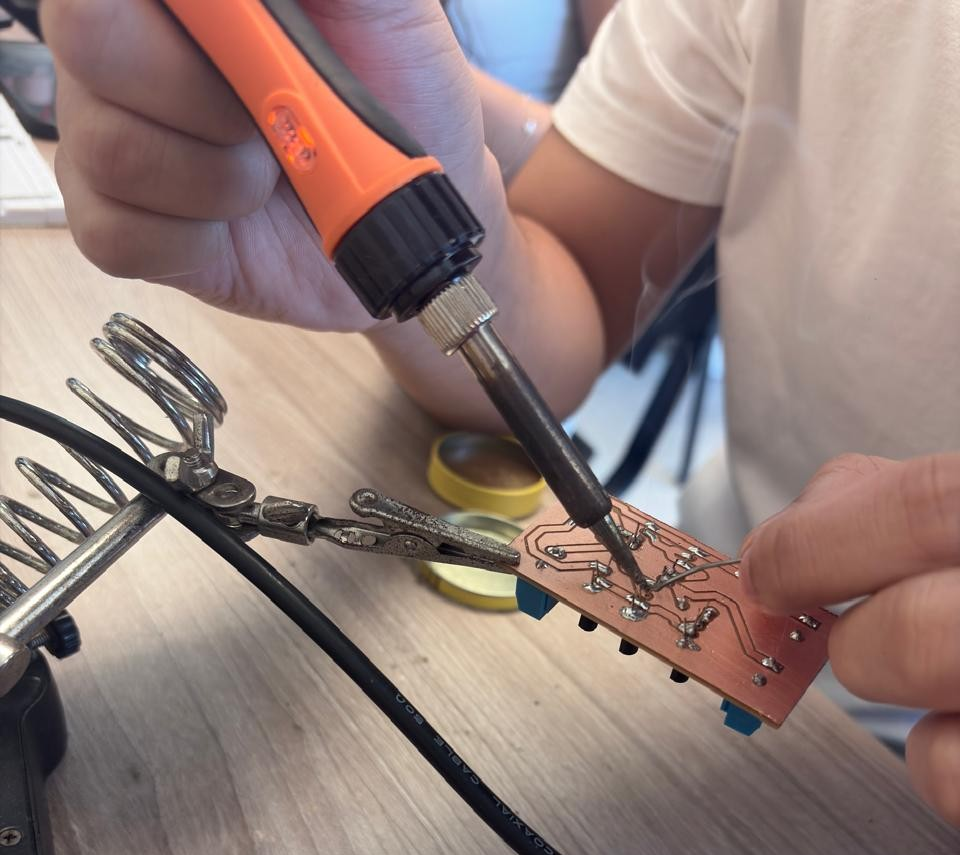
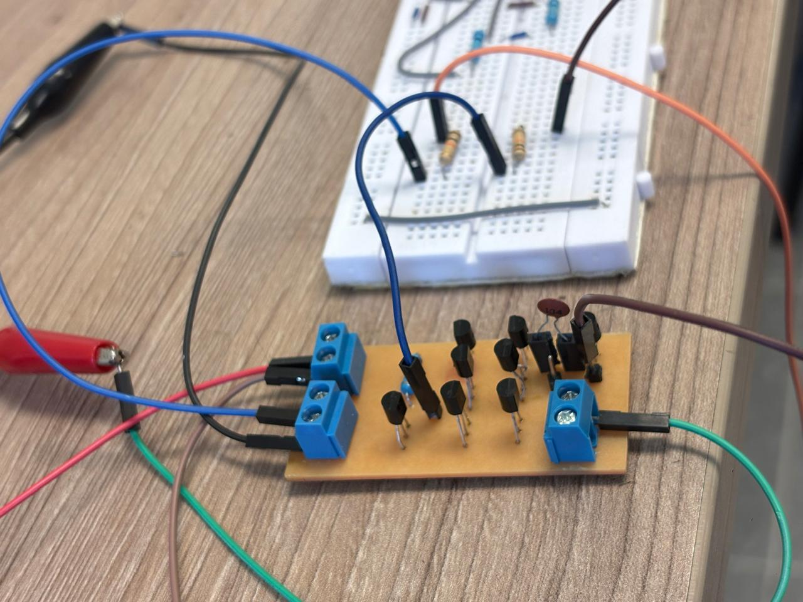

Diseño del PCB
Una vez verificado el funcionamiento del circuito en protoboard, se realizó el diseño del circuito impreso utilizando KiCad. El objetivo fue obtener una implementación más compacta y estable del amplificador operacional.


Fotos del PCB

pcb

Soldadura

PCB Funcionando
Estado Final
OP-AMP completamente funcional en PCB profesional, listo para mediciones y documentación.